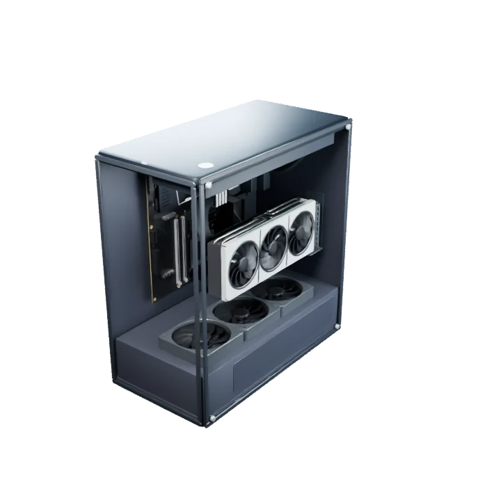

01 / SYSTEM EVOLUTION
La tecnología
se transforma.
Un solo sistema. Una nueva manera de reparar, conectar y crear.
MONTEVIDEO, URUGUAY JG NEXT GEN

CAMERA PATH / BEZIER
VISTA INICIAL ELEVADAPC COMPLETA / FIN DE 01
G1 · SIETE POSES REALES DE BLENDER. NO ES EL VIDEO FINAL NI UNA SIMULACIÓN DE FLUIDEZ.
02 / HARDWARE — SIGUIENTE CAPÍTULO
La máquina se revela.
Pieza por pieza.
El encuadre final de CORE-01 será el primer encuadre del despiece. Sin acercar más la cámara: separaremos sus componentes y aparecerán líneas guía, cotas y etiquetas técnicas.
PROTOTIPO DE DESPIECE PENDIENTE / SIN RENDER AÚN